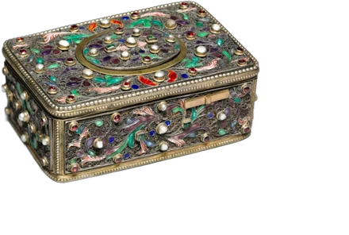

You might recognize this
- You reread the email six times and still worry after you send it.
- Praise slides off. Criticism stays for weeks.
- You put things off, because starting means it might not be perfect.
- You’re tired in a way a weekend doesn’t fix.
Where it comes from, and what changes
Perfectionism usually has a history. Somewhere along the way, doing well became the way to stay safe, or loved, or left alone. Lora is interested in that history and in the voice that took over the job.
You get to keep your standards. Most of Lora’s clients are very good at what they do and plan to stay that way. What changes is the dread that comes with it.
This is a large part of her practice. She works mostly with high-achieving women, and she can tell ambition from fear dressed up as ambition.
Questions people ask
Will therapy make me less ambitious?
That’s a common worry. The aim is to take the fear out of the work, and the work usually gets easier once it’s gone.
I function fine. Is this really a reason for therapy?
Functioning fine and feeling fine are different things. Plenty of people come in looking great on paper.

Lora Hope
Lora works with women whose lives look put-together from the outside and feel like too much from the inside.
- Sessions
- $130 for 45 minutes, $170 for 60
- Insurance
- Kaiser, UnitedHealthcare, Oxford, Optum, Oscar, Surest, UMR, and Colorado Medicaid
- Where
- 4704 Harlan St, Suite 440, Denver, or by video anywhere in Colorado

Who am I after the divorce?Life transitionsDivorce, a new career, menopause, the last kid leaving home. 05Why do I keep ending up here?Relationships and self-worthDifferent person, same argument.